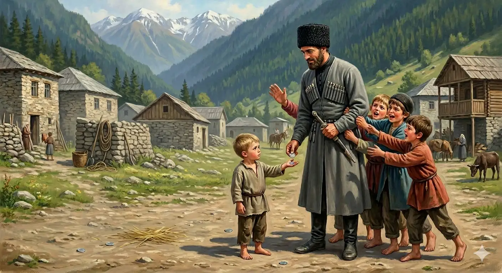

И.А. Дахкильгов. Хьехаме дувцарш - поучительные рассказы-притчи.
И.А. Дахкильгов. Хьехаме дувцарш - поучительные рассказы-притчи. Из ингушского фольклора.

Ӏа шок локхаргья
Буро тӀа вода ше, аьнна, цхьа къонах кийчвеннав. Дукхача бераша го баьб цунна. Сона из эцалахь, сона вож эцалахь, яхаш, массане цхьацца дехар деш хиннад. "Эцаргья", "эцаргья" оалаш, бераш Ӏехадеш, тӀехьарадаха гӀерташ хиннав къонах. Царна хӀамаш ийе дага а хиннавац из. Циггач къонахчоа тӀавенав цхьа кӀаьнк. Эппаз дӀа кховдадаь, аьннад цо: - Буро тӀа сона шоклекхарг эцалахь. - Ӏа шок локхаргья хьона, - аьннад къонахчо.
РУССКИЙ
Ты будешь свистеть
Раз собрался горец поехать в Буро - Владикавказ. Узнав об этом, детвора окружила его и начала просить: привези мне то, привези это, купи то-то… Он же, избавляясь от их наседаний, всем отвечал: "Привезу, привезу…". Но тут один карапуз протянул ему двугривенный и сказал: - Купи мне свистульку. - Вот ты, воистину, будешь свистеть, - сказал мужчина.
ENGLISH
You'll be whistling
One day, a highlander was setting off for Buro - Vladikavkaz. When the children heard about this, they surrounded him and began begging: 'Bring me this, bring me that, buy me such-and-such…' He, trying to fend off their pestering, replied to them all: 'I'll bring it, I'll bring it…'. But then one little rascal held out a two-grivna coin to him and said: 'Buy me a whistle.' 'Well, you'll certainly be whistling,' said the man.
НОХЧИЙН
Ахь шок локхур йу
Буро тӀе воьду ша, аьлла, цхьа къонах кечвелла. Дукхачу бераша го бина цунна. Суна иза эцалахь, суна важа эцалахь, бохуш, массара цхьацца дехар деш хилла. "Оьцур йу", "оьцур йу" олуш, бераш Ӏехадеш, тӀехьарадаха гӀерташ хилла къонах. Царна хӀуманаш эца дагахь а хилла вац иза. Циггахь къонахчун тӀевеъна цхьа кӀант. Эппаз дӀа а кховдина, аьлла цо: - Буро тӀехь суна шок эцалахь. - Ахь шок локхур йу хьуна, - аьлла къонахчо.
ПОГОВОРКИ
Ала дезача аьнна дош – тоха езача теха топ. Вовремя сказанное слово – по делу выстрелившее ружье. A word spoken at the right time is like a gun fired right at its target. Ала дезачехь аьлла дош – тоха йезачехь тоьхна топ.ДӀатекхаечоа мара тӀехьайодац ворда. Арба катится только за тем, кто ее тянет. The cart follows only the one pulling it. ДӀатекхочун бен тӀаьхьайодац ворда.Зама хувцаяларга хьежжа цунца тайнар котваьннав. Кто поспевает за изменениями в жизни, тот выигрывает. One who keeps pace with changing times comes out ahead. Заман хийцайаларе хьаьжжина тайнарг тоьлла.Кепиг кепига тӀа дуллаш, Ӏоаду рузкъа. Богатство создают, складывая копейку к копейке. Wealth is built by putting kopeck upon kopeck. Кепек кепекан тӀе йуьллуш, ӀаӀадо рицкъ.Киса даьсса хилча, дуар дуне дац. И жизнь не в жизнь, когда карман пуст. Life is no life at all when your pocket is empty. Киса даьсса хилча, дуург дуьне дац.“Кхоана кампеташ яхьаргья, ломма бӀараш дахьаргда” яхарах пайда бац, кара хьа ца кхаьчача хӀаман. Нет пользы в том, что завтра обещают привезти конфеты, а послезавтра – орехи, пока их не будешь иметь. There is no use promising sweets tomorrow and nuts the day after, if you don't yet have them in hand. "Кхана кампеташ йохьур йу, лама бӀараш дохьур ду" бахарах пайда бац, кара схьа ца кхаьчначу хӀуман.Кхоанара ди дага кхоабаш вола саг тахан кӀалвусаргвац. Постоянно думающий о завтрашнем дне не пропадет сегодня. One who always keeps tomorrow in mind will not be caught unprepared today. Кханлера де дагахь кхобуш волу стаг тахана кӀелвуьсур вац.Наьха рузкъах хьегачул дикагӀа да хьай рузкъа Ӏовдича. Чем завидовать чужому добру, лучше свое накапливать. Better to grow your own wealth than to envy someone else's. Нехан рицкъанах хьоьгучул диках ду хьай рицкъ ӀаӀийча.Наьхадар бӀаргашца дуъ, шийдар цергашца дуъ. Чужое едят глазами, свое – зубами. You eat another's food with your eyes; your own with your teeth. Нехадерг бӀаьргашца дуу, шедерг цергашца дуу.Товр даьчунна ловр даьд. Дали желаемое тому, кто отнесся с почтением. One who showed respect received respect in return. Товш дерг диначунна луург дина.Хьаьр кхера а кхастац ялат доацаш. Без зерна не крутятся и жернова. The millstones do not turn without grain. Хьеран кхера а кхерстац ялта доцуш.Хьо лаьттанца дика – из хьоца дика. Ты к земле по-хорошему, и она тебя отблагодарит. Treat the land well, and it will treat you well in return. Хьо лаьттанца дика - иза хьоьца дика.ХьунагӀа дӀалелар дац аькха, аькха да хьунагӀара цӀаденар. Не та добыча, что в лесу находится, а та, которую домой принесешь. The prize isn't what's left in the forest — it's what you bring home. Хьунахь дӀалеларг дац экха, экха ду хьунара цӀадеънарг.